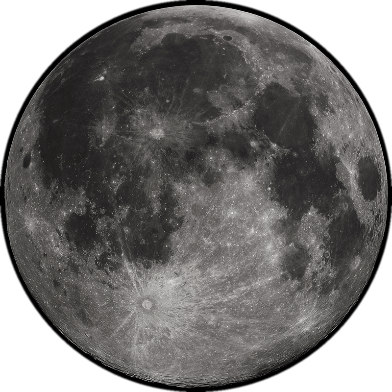

2 0 2 6 · 1 0 · 2 9
开启
四位密码 · 是你的生日
1
2
3
4
5
6
7
8
9
删除
0
确定
初 见
0
生 日 礼 物
点 一 下
这一路上，藏了
12 颗星
右上角是你的星袋
向 下 滑 动
01
/ 09
2006.10.29
2026.10.29
二十年，
刚好
今天
刚 好 是 你
20
开 始
7 3 0 5 天
地 球 绕 太 阳 2 0 圈
02
/ 09
OBSERVATION · 2006.10.29 18:45
你出生那天的天空
山东 · 章丘
36.68°N
117.53°E
太阳刚落下去十八度，天刚黑透
斜 着 划 环 视 · 普 通 上 下 划 翻 页
那天晚上，
织女
在西北，
牛郎
在西南
中间隔着一整条银河。
MOON
上弦月 45.25%
SUN ALT
−18.2°
03
/ 09
那天月亮正好是一半。
缺的那一半，大概是在等我。

45.25
亮 度 · %
7.28
月 龄 · 天
94.8°
相 位 角
新 月
上 弦
满 月
下 弦
2006 年 10 月 29 日 黄昏后 西南方低空
04
/ 09
我们
左右滑动
01
/ 12
2022
2025
05
/ 09
礼物
翻到哪个，就是哪个
六 张 · 点 一 下 翻 开 · 每 张 都 不 一 样
06
/ 09
D A Y S T O G E T H E R
在 一 起
2161
天
2020. 11. 16 — 今 天
点 一 下 换 个 说 法
5
年
11
个月
13
天
51864
小时
3111840
分钟
07
/ 09
去过的地方
点省份，标记你去过
家
去过
还 没
拖 动 可 移 动 · 双 指 可 缩 放
回 到 全 国
08
/ 09
一路上你捡起的那些星
连起来，是
天蝎座
哈雷彗星 76 年才回来一次
下一次是 2061 年 7 月 那时候我们 55 岁
2 0 2 6 · 1 0 · 2 9 2 0 岁 生 日 快 乐
09
/ 09